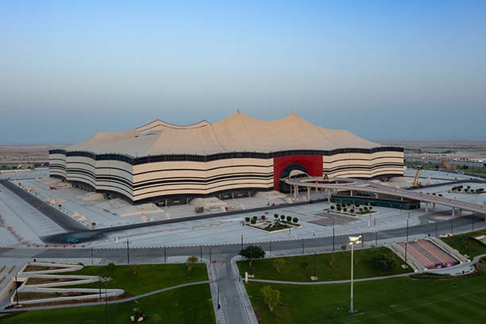
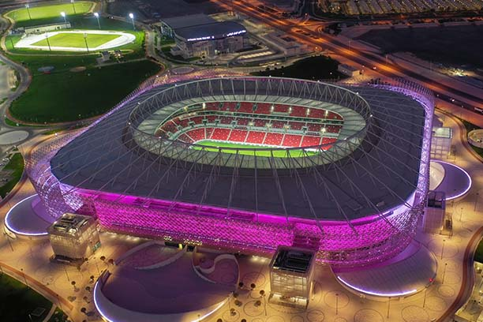
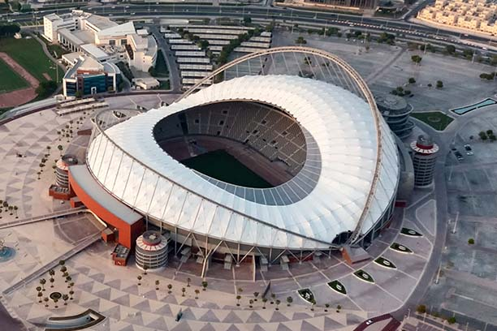

Al Bayt Stadium
Se encuentra en Al Khor City, a 35km
del norte central de Doha.
Tiene una capacidad de 60.000 personas
y es el anfitrion de la apertura.

Lusail Stadium
Se encuentra en Lusail City, a 20km al
norte del centro de Doha.
Tiene una capacidad de 80.000 personas
y es el anfitrion de la Final.

Ahmad Bin Ali Stadium
Se encuentra en Unm Al Afei, a 20km al
oeste del centro de Doha.
Tiene una capacidad para 40.000
personas.

Al Janoub Stadium
Se encuentra en Al Wakrah, a 22km al
este del centro de Doha.
Tiene una capacidad de 40.000 personas.

Al Thumama Stadium
Se encuentra en Al Thumama, a 12km al
sur del centro de Doha.
Tiene una capacidad de 40.000 personas.

Education City Stadium
Se encuentra en Al Rayyan, a 13k, al
noroeste del centro de Doha.
Tiene una capacidad de 40.000 personas.

Khalifa International Stadium
Se encuentra en Aspire, a 5km al
oeste del centro de Doha.
Tiene una capacidad de 40.000 personas.
